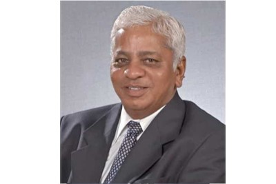
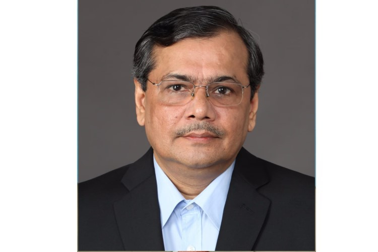
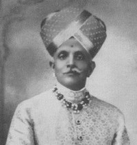
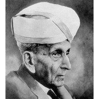

About UVCE
Legacy and the Journey of 100 Years
University of Visvesvaraya College of Engineering (UVCE) was established in the year 1917 by Bharat Ratna Sir M Visvesvaraya. Currently affiliated to Bangalore University, the College provides six engineering courses – Electronics and Communication, Electrical and Electronics, Mechanical, Computer Science, Information Science and Civil Engineering.
Situated at KR Circle in a greenery filled scenic expanse of 10 acres, UVCE is in the neighborhood of heavenly cubbon park and at an arm’s distance are some of the most important locations like Vidhana Soudha, Karnataka High Court and City Civil Court. The City campus currently houses the Department of Mechanical Engineering, Electrical Engineering, Electronics and Communication and Computer Science Engineering. Proximity to the Metro, City Bus Station and Railway Station connects one easily to any part of the city and helps in commutation to UVCE.
Situated amidst Jnana Bharathi Campus spread over 50 acres, the hub of University Post graduate academic activities, the Engineering Campus has Departments of Civil Engineering and Architecture.
This pioneer college has grown many folds, producing some of the best engineers in the country. Being an institution that functions on only Merit- Based CET seat allotment, the students obtaining admission are the creamy layer of the bright students in the state. The inexpensive fees structure is an aid and a driving reason for students of difficult financial stability and from the rural to join the college. The college crafts an environment for allround development of students encompassing both academic and extra-curricular activities. The students are hardworking, cultured, highly disciplined and have preserved the cherished values of this institution over the years. UVCE instills a zealous essence into the students which propels them to explore new realms of engineering and embark to achieve great things. Enhancing this factor is the experience that students gain learning at UVCE in a way diff erent from the education system of most conventional engineering colleges. Undermining the visible lack of infrastructure in UVCE is the vivacity and learning that is meticulously propelled by the students themselves.
The college is a hub of many technical and non- technical activities evenly spread throughout the year. The ever active students are teamed to nurture various special interest groups in college to foster their technical and creative skillsets on a myriad of platforms whilst helping each other. The entire student fraternity contributes in making each of these events a success. The college is currently being funded by the World Bank under the TEQIP project for the improvement of the quality of technical education through various programs and infrastructural developments. The devoted faculty is highly qualified, experienced and plays a pivotal role in enthusing the students to achieve remarkable feats. The Institution boasts of very good campus placements and a mighty rate of students taking up higher education abroad.
UVCE Alumni have etched “UVCE” as a highly recognized institution and are keeping the esteemed honor of the institution flying high with their remarkable achievements in the respective fields/organizations. Alumni of UVCE are not only noteworthy of their achievements that have brought great recognition to the institution but have also made the nation proud on a global platform.


Legacy Of UVCE

Nalvadi Krishnaraja Wodeyar
Maharaja Krishnaraja Wadiyar IV (Nalwadi Krishnaraja Wadiyar) was the twenty-fourth maharaja of the Kingdom of Mysore, from 1894 until his death in 1940.He was a philosopher-king whom Mahatma Gandhi called as Rajarshi, or "saintly king", and his kingdom was described by his followers as Rama Rajya.
During his reign, he worked toward alleviating poverty and improving rural reconstruction, public health, industry and economic regeneration, education and the fine arts. During his reign, Mysore Kingdom (comprising Bangalore, Chitradurga, Hassan, Kadur, Kolar, Mysore, Mandya, Shimoga, and Tumkur) saw an all-round development. Few of the important projects were:
1. The Hydro Electric Project at Shivanasamudra Falls
2. Bangalore was the first city in India to get electric street lights
3. Vani Vilasa Sagara Chitradurga, the first dam in Karnataka state.
4. State Bank of Mysore established in 1913
5. Government Sandalwood oil factory, Mysore Lamps in Bangalore
6. Mysore Paper Mills,Bhadravathi was established
To give a fillip to higher education and to enable Mysore boys to play their part in the Engineering field, the Mysore University was started in 1916 as a unitary type. Along with the birth of the University, the College of Engineering was also established at Bangalore in 1917, as some facilities regarding accommodation and works had already existed at the School of Engineering

BharatRatna Sir M Visvesvaraya
Sir Mokshagondam Visweswarayya, popularly known as Sir MV was an Indian chief civil engineer, scholar, statesman, politician and the 19th Diwan of Mysore, who served from 1912 to 1919. He received India's highest honour, the Bharat Ratna, in 1955. He was knighted as a Knight Commander of the British Indian Empire (KCIE) by King George V for his contributions to the public good. 15 September is celebrated as Engineer's Day in India in his memory.
He was called "Father of Modern Mysore State" . During his service with the government of Mysore State, he was responsible for the construction of the Krishna Raja Sagara dam, founding of (under the patronage of the Mysore government) Mysore Soap Factory, Parasitoid Laboratory, Mysore Iron & Steel Works (now known as Viswesvarayya Iron and Steel Limited) in Bhadravathi, Sri Jayachamarajendra Polytechnic in Bangalore, Bangalore Agricultural University, State Bank of Mysore, Century Club, Mysore Chamber of Commerce (presently known as FKCCI), University Visvesvaraya College of Engineering Bangalore and numerous other industrial ventures & educational institutions.
He was known for sincerity, time management, and dedication to a cause. He was a Visionary. He visulaized the need for skilled workers and supervisors in the future and that demand will need to be met with the local students, which would help in employment and growth. Under such circumstances, College of Engineering was started by Sir MV in 1917 with the blessings of the Maharaja of Mysore, which is now known as UVCE